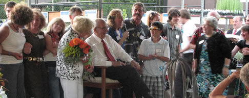

| ||||||||||||||||||||||||
Join us on Facebook and we'll keep you notified of the latest in our stores! Use FACEBOOK to talk to other gardeners and share your gardening experiences, tips and favorites! Become one of our fans by clicking below!
Our coupon comes with the monthly update at the beginning of the month. You can always find it at the monthly coupon link
Sales for both locations
All Sales limited to stock on hand.
PRESERVING YOUR GARDEN Weekly Figure Drawing
Preserving Your Garden Weekly Figure Drawing Oregon Cactus & Succulents Waterwise Gardening Organic Gardens of Eatin': Advanced Vegetable Gardening Attracting Wild Birds Oregon Greyhound Adoption Pet Friendly Gardening Fall & Winter Vegetable Gardens Waterwise Gardening Year Round Vegetable Gardening 9000 SE DIVISION Algae Control for Your Pond Clematis From Grass to Groceries Edible Flowers Several new classes were added for July - Be sure to check them out! Our classes fill up fast. Be sure to visit our events page early to sign up! VISIT OUR EVENTS PAGE FOR REGISTRATION AND DETAILS
If you would like to have us answer a gardening questions, please email us at info@portlandnursery.com. Many of your questions are selected for our FAQ feature, so be sure to see our FAQ archive for the latest questions.
|
|
PINK ANNABELLE HYDRANGEAS are here! We have Hardy Hibiscus in. Great time to feed wild birds with our specialty birdseed mixes and great We have a great outdoor bonsai department and a great indoor bonsai
Lotus are in at Division. Need help with adding a pond to your yard? Ask George at Division to help
We want to add our voice to the other gardeners in Portland who were saddened to hear of the passing of Dulcy Mahar on July 2nd. Her twenty-two years of weekly articles in The Oregonian were full of humor and an unabashed passion for plants; her enthusiasm and encouragement bolstered the courage of novice gardeners and inspired those more experienced. A tireless experimenter in her own garden, hers was always a favorite stop on garden tours. She amassed many fans and followers over the years, making her column a much-anticipated favorite each week. She will be greatly missed.
 BOB DENNEY TURNS 90! On a happier note, July 5th marked the 90th birthday of Bob Denney, co-owner and driving force behind Portland Nursery's success for many years. It was a warm and breezy summer evening at the nursery that welcomed more than two hundred well-wishers for dinner and tributes under the big white tent where Bob has been for years stationing himself amongst the bins of apples and pears at our annual Apple Tasting festival, answering questions and talking about all things to do with these seasonal fruits. Surrounded by generations of family, Bob was the recipient of much affection (and just the tiniest bit of roasting) in stories and toasts by family members and old friends, all in the middle of the nursery he has helped to create.

EXTRA VEGETABLES? THE OREGON FOOD BANK DROP-OFF LOCATIONS Some of us are very fortunate to be able to walk out our back doors and pick fresh produce from the garden. But many of our neighbors don't have access to fresh food, and are not certain when their next meal will be. It's a fact. But we, you, can help. And the folks at Portland Nursery and the Oregon Food Bank make it even easier. Visit the information desk at either Stark or Division and ask for the "Plant a Row" notebook. There, you will find the locations of all the food pantries that are ready to accept your fresh produce. Find the one closest to home and sign up to deliver a portion of your harvest to share with your neighbors in need. We will even give you a free packet of seeds to help you increase your garden's bounty. It's better when we all work together. May this harvest be bountiful for us all!
It's not to early to start thinking about winter veggies. Even though summer weather hasn't even begun, it is time to start planning and planting the winter veggie garden. You can start your Brassica seeds, parsnips and plant winter squash. Here is a link to our Winter Veggie brochure. And don't worry, it's still not too late for summer crops too such as short season tomatoes, corn and beans.
Indie Artisans and RAD Crafters bring you their Summer collection of new styles in hot colors and must haves! From jewelry to fun and funky home décor in a garden setting with live music and local brew! The 'Summer Soiree' is a great way to spend an afternoon chatting and browsing sweet summer-y finds! With a variety of offerings to choose from, we're sure you'll be back for more...this party ROCKS! Read more on their website Super Rad PDX Craft Show 9000 SE DIVISION • Sunday • July 17• 1:00-7:00pm
SHRUB PICK - Sambucus - Elderberry ANNUAL PICK - Brugmansia & Datura - Angel Trumpets NATIVE PICK - Ribes - Wild Currant
|
| |
|
|||||||||||||||||||
|
Portland Nursery - 5050 SE Stark - Portland, OR 97219 - 503.231.5050 - & - 9000 SE Division - Portland, OR 97219 - 503.788.9000 |